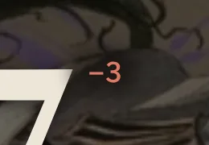
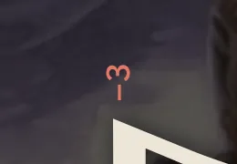
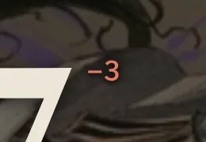
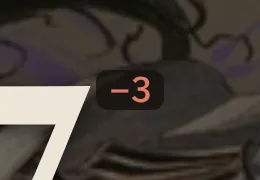
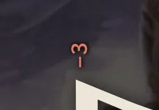
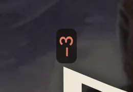

The ±N over any art · addendum
When a player taps or holds their life, a green +N or red −N fades in beside the total for about two seconds (the Nudge press). Over light art the loss figure, even in #3191's lighter red (--critical-fg), fell under 3:1. This round puts a soft halo of the theme's own ground under the figure. Every frame is the shipped tracker (main 14f9519 with #3191's ink) rendered in a browser at the real viewport, and every number is measured on the pixels behind the figure.

worst 2.45 · p5 3.68 · median 4.84

worst 4.64 · p5 5.29 · median 5.88

worst 3.26 · p5 3.42 · median 3.69

worst 5.00 · p5 5.20 · median 5.35

worst 2.53 · p5 3.84 · median 5.70
Darkens only the strokes' edges; between strokes the art shows through, so it can't promise every pixel. It also smears the 18px mono.
worst 4.64 · p5 5.29 · median 5.88
A soft pool of --bg, flat under the glyphs and feathered out past them. Over dark art it disappears into the art.

worst 5.50 · p5 5.88 · median 6.11
A hard-edged 78% pill. Reads, but as a badge: a new object in the panel, against the press's light feel.

worst 3.61 · p5 3.72 · median 4.92
worst 5.00 · p5 5.20 · median 5.35

worst 5.79 · p5 5.81 · median 5.87
1 · A halo under the figure, gains and losses alike
- The pending ±N and its fading copy draw a before: absolute, 1px in from the figure's top and bottom, 3px past its sides, fully rounded, behind the glyphs; fill
color-mix(in srgb, var(--bg) 60%, transparent);box-shadow: 0 0 10px 7pxin the same mix. - Existing tokens only:
--bgthroughcolor-mix, the inks stay--success(gain) and--critical-fg(loss, from #3191). No new token, no hex. - Same halo on +N and −N, so a gain and a loss look like the same object in two colours.
2 · It holds 3:1 over any art
- Over a pure white commander art, on the brightest panel state (your active seat, art at 72%), in all six themes, gain and loss, phone and tablet: worst pixel 3.55 (now 1.85).
- White is the brightest pixel any art can put behind the figure, so no real art can do worse. Every seat we measured with real art clears it with room to spare (Contrast board).
- 60% is the lightest mix that keeps a margin over 3:1 on white (56% gave 3.50, 62% gave 3.76 at the active seat).
3 · It fades with the figure
- The halo is the figure's own
::before, so it rises in with the 150 ms fade-in, rides the 400 ms drift-and-fade at the save, and is gone when the figure is. Nothing new animates and nothing is held after the save. - Reduced motion: the figure and halo show at once and clear at once at the save, as the figure does today.
- The press wash (10% accent while the finger is down) is unchanged: the halo is the figure's, not the press's.
4 · The life total needs nothing new
- The total is
--fgat 60 px and up with its shipped dark text shadow. Over the same pure white plate at your active seat its worst pixel is 3.53 (Kaldheim; 4.3 to 4.6 in the other themes), above 3:1 for large text. - Over every real art we measured its worst pixel is 4.58:1 or better. No change; the Contrast board lists it beside the ±N.
5 · Phone, tablet and desktop
- One component and one class string draw every seat on every device and in every turn of the seat (upright, sideways, upside down), so parity is automatic. The Seats board shows phone 390, iPad landscape and portrait, and a 1440×900 desktop window.